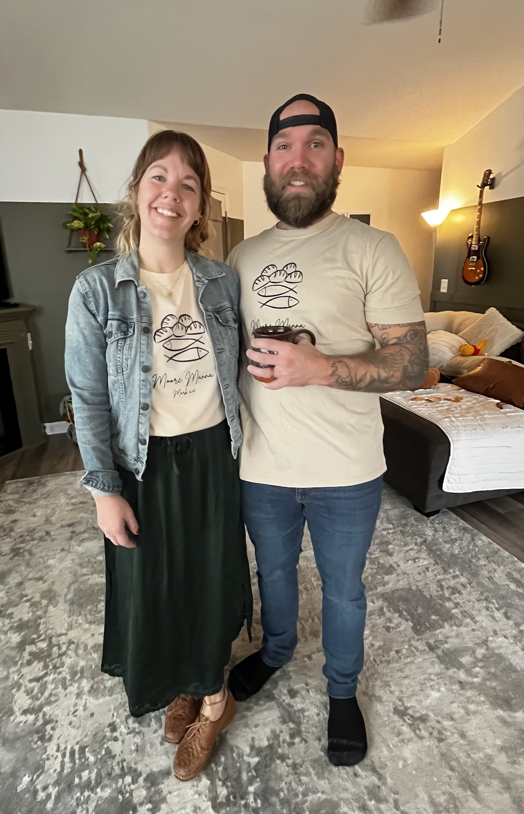
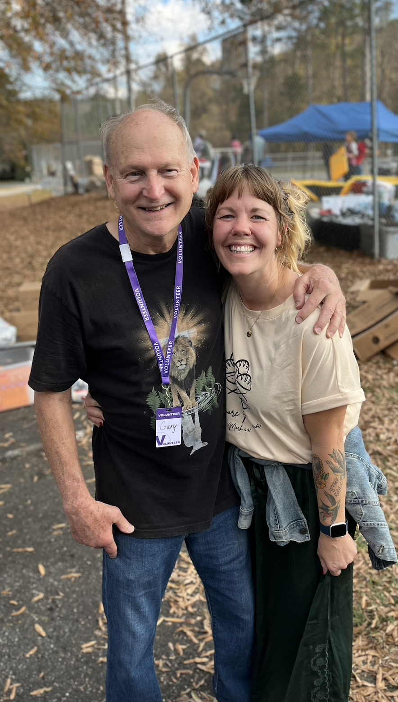

This Is Us
Brien and Kelly Travis founded Moore Manna in September of 2025.
Seemingly a simple tasking feeding 12 people quickly grew to feeding over 110 people each week!
What started out as sandwiches with bread made from scratch evolved into delicious, well thought out meals, prayer, and discipleship.

Our volunteer count was around 8 initially, and we now have 40 faithful hands and feet.
Our Team has successfully found long-term placement for 6 individuals since September, and countless others have made Jesus Lord of their life, begun coming to church, reading Scripture, helping others, and finding hope in darkness.
